Announcements:
- Exam 1 on 02/25
- Instructions and study guide available
- Feasting with Faculty will resume on 02/26
Office Hours:
- Monday, Friday: 9:45 AM - 11:00 AM
- Thursday: 11:00 AM - 12:00 PM
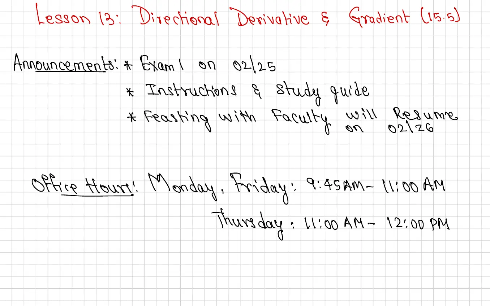
Announcements:
Office Hours:
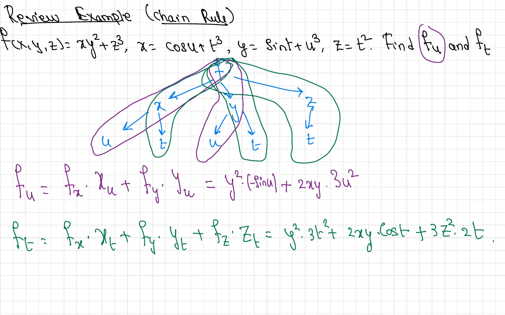
Given \(f(x,y,z) = xy^2 + z^3\), where \(x = \cos u + t^3\), \(y = \sin t + u^3\), and \(z = t^2\), find \(\frac{\partial f}{\partial u}\) and \(\frac{\partial f}{\partial t}\).
Diagram Description: The page shows a dependency tree diagram illustrating how the function \(f\) depends on intermediate variables \(x\), \(y\), and \(z\), which in turn depend on the independent variables \(u\) and \(t\). The tree has \(f\) at the top, branching down to \(x\), \(y\), and \(z\), with each of these further branching to show their dependencies on \(u\) and \(t\).
Solution:
Using the multivariable chain rule:
\[\frac{\partial f}{\partial u} = \frac{\partial f}{\partial x} \cdot \frac{\partial x}{\partial u} + \frac{\partial f}{\partial y} \cdot \frac{\partial y}{\partial u} + \frac{\partial f}{\partial z} \cdot \frac{\partial z}{\partial u}\]Computing the partial derivatives:
Therefore:
\[\frac{\partial f}{\partial u} = y^2(-\sin u) + 2xy \cdot 3u^2\]Similarly, for \(\frac{\partial f}{\partial t}\):
\[\frac{\partial f}{\partial t} = \frac{\partial f}{\partial x} \cdot \frac{\partial x}{\partial t} + \frac{\partial f}{\partial y} \cdot \frac{\partial y}{\partial t} + \frac{\partial f}{\partial z} \cdot \frac{\partial z}{\partial t}\]With:
Therefore:
\[\frac{\partial f}{\partial t} = y^2 \cdot 3t^2 + 2xy \cdot \cos t + 3z^2 \cdot 2t\]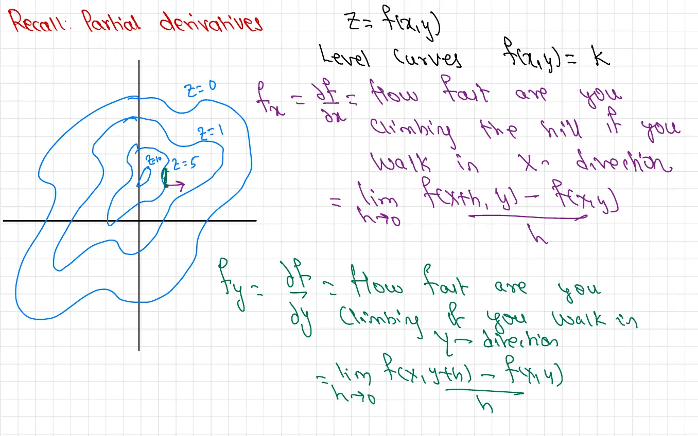
For a function \(z = f(x,y)\), we can visualize level curves \(f(x,y) = k\).
Graph Description: The page displays a contour plot showing level curves of a function in the \(xy\)-plane. The curves are labeled with values like \(z=0\), \(z=1\), \(z=5\), representing different heights on the surface. A point in the interior is marked, with arrows indicating the \(x\) and \(y\) directions.
Definition: The partial derivative with respect to \(x\) is:
\[f_x = \frac{\partial f}{\partial x} = \lim_{h \to 0} \frac{f(x+h, y) - f(x,y)}{h}\]This represents how fast you are climbing the hill if you walk in the \(x\)-direction.
Definition: The partial derivative with respect to \(y\) is:
\[f_y = \frac{\partial f}{\partial y} = \lim_{h \to 0} \frac{f(x, y+h) - f(x,y)}{h}\]This represents how fast you are climbing if you walk in the \(y\)-direction.
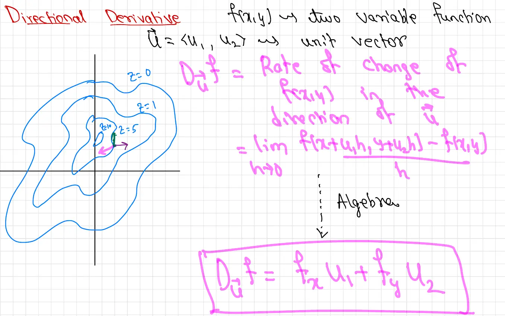
Graph Description: The page shows the same contour plot as the previous page, with level curves labeled \(z=0\), \(z=1\), \(z=5\). At a point in the plot, there is an arrow labeled \(\vec{u}\) pointing in an arbitrary direction (not aligned with the \(x\) or \(y\) axes), illustrating a directional derivative in that direction.
For a function \(f(x,y)\), we have seen that partial derivatives tell us the rate of change in the coordinate directions. But what if we want to know the rate of change in an arbitrary direction?
Definition: Let \(\vec{u} = \langle u_1, u_2 \rangle\) be a unit vector. The directional derivative of \(f(x,y)\) in the direction of \(\vec{u}\) is:
\[D_{\vec{u}} f = \lim_{h \to 0} \frac{f(x + hu_1, y + hu_2) - f(x,y)}{h}\]This represents the rate of change of \(f(x,y)\) in the direction of \(\vec{u}\).
Algebra:
The directional derivative can be computed using the formula:
\[D_{\vec{u}} f = f_x u_1 + f_y u_2\]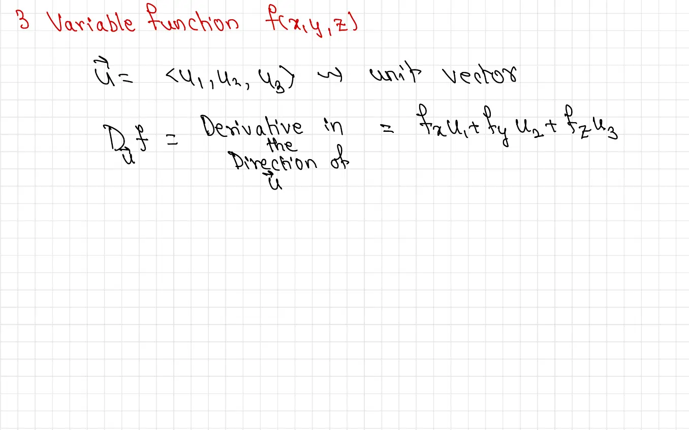
Definition: For a function \(f(x,y,z)\), let \(\vec{u} = \langle u_1, u_2, u_3 \rangle\) be a unit vector. The directional derivative in the direction of \(\vec{u}\) is:
\[D_{\vec{u}} f = f_x u_1 + f_y u_2 + f_z u_3\]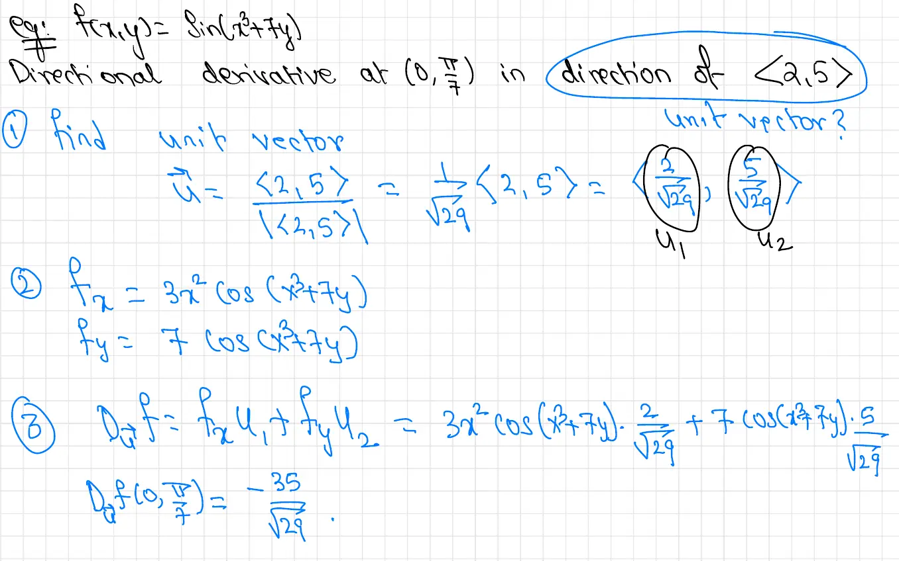
Given \(f(x,y) = \sin(x^3 + 7y)\), find the directional derivative at \((0, \frac{\pi}{4})\) in the direction of \(\langle 2, 5 \rangle\).
Solution:
First, we need to convert \(\langle 2, 5 \rangle\) to a unit vector:
\[\vec{u} = \frac{\langle 2, 5 \rangle}{|\langle 2, 5 \rangle|} = \frac{\langle 2, 5 \rangle}{\sqrt{29}} = \left\langle \frac{2}{\sqrt{29}}, \frac{5}{\sqrt{29}} \right\rangle\]So \(u_1 = \frac{2}{\sqrt{29}}\) and \(u_2 = \frac{5}{\sqrt{29}}\).
Evaluating at \((0, \frac{\pi}{4})\):
\[D_{\vec{u}} f\left(0, \frac{\pi}{4}\right) = \frac{-35}{\sqrt{29}}\]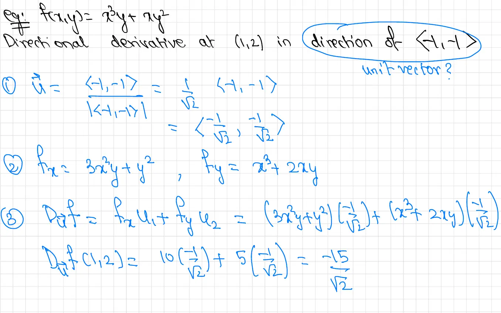
Given \(f(x,y) = x^2y + xy^2\), find the directional derivative at \((1,2)\) in the direction of \(\langle -1, -1 \rangle\).
Solution:
Evaluating at \((1,2)\):
\[D_{\vec{u}} f(1,2) = (10)\left(\frac{-1}{\sqrt{2}}\right) + (5)\left(\frac{-1}{\sqrt{2}}\right) = \frac{-15}{\sqrt{2}}\]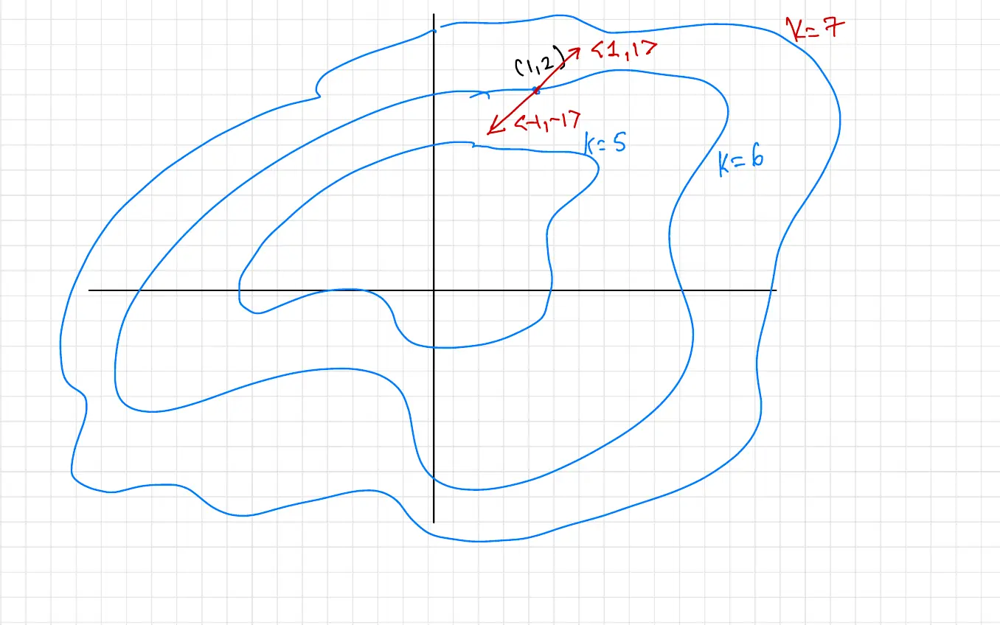
Graph Description: The page shows a contour plot with several level curves labeled \(k=5\), \(k=6\), and \(k=7\). At a point \(C(1,2)\) on one of the curves, there are two vectors drawn: one labeled \(\langle 1, 1 \rangle\) pointing upward and to the right, and another labeled \(\langle -1, -1 \rangle\) pointing downward and to the left (in the opposite direction). The curve \(k=7\) is at the top of the diagram.
This visualization shows how the directional derivative varies depending on the direction of travel. Moving in the direction of \(\langle -1, -1 \rangle\) from point \((1,2)\) results in a negative rate of change (descending), while moving in the opposite direction \(\langle 1, 1 \rangle\) would result in a positive rate of change (ascending).
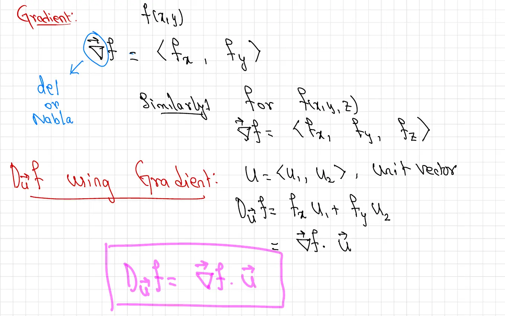
Definition: For a function \(f(x,y)\), the gradient of \(f\) is the vector:
\[\nabla f = \langle f_x, f_y \rangle\]The symbol \(\nabla\) is read as "nabla" or "del".
Definition: Similarly, for \(f(x,y,z)\), the gradient is:
\[\nabla f = \langle f_x, f_y, f_z \rangle\]Directional Derivative using Gradient:
Let \(\vec{u} = \langle u_1, u_2 \rangle\) be a unit vector. Then:
\[D_{\vec{u}} f = f_x u_1 + f_y u_2 = \nabla f \cdot \vec{u}\]This shows that the directional derivative equals the dot product of the gradient with the unit direction vector.
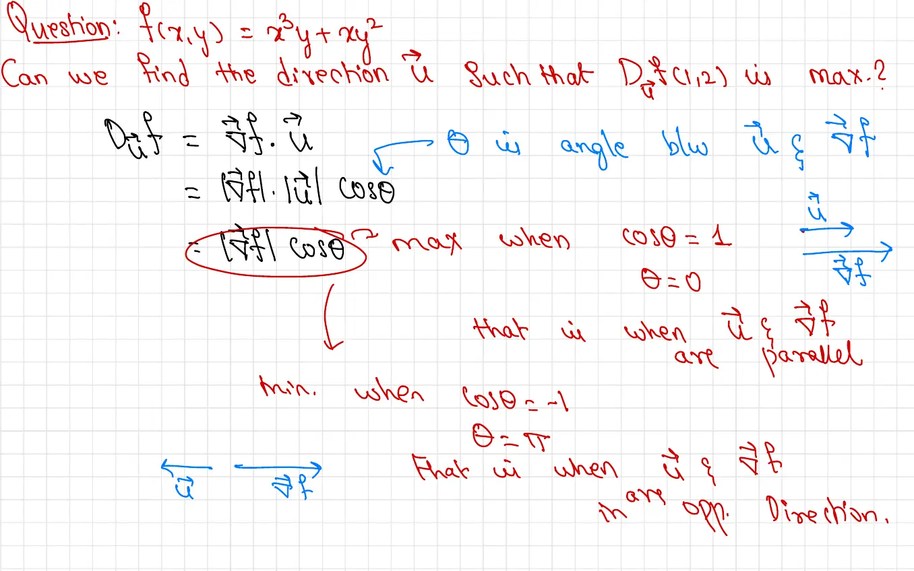
Question: Given \(f(x,y) = x^2y + xy^2\) at \((1,2)\), can we find the direction \(\vec{u}\) such that \(D_{\vec{u}} f(1,2)\) is maximum?
Diagram Description: The page shows two parallel vectors: \(\vec{u}\) and \(\nabla f\), illustrating that when these vectors are parallel, the directional derivative is maximized. Below this are vectors \(\vec{u}\) and \(-\nabla f\) pointing in opposite directions, illustrating the minimum case.
Analysis:
We have:
\[D_{\vec{u}} f = \nabla f \cdot \vec{u} = |\nabla f| \cdot |\vec{u}| \cdot \cos \theta\]where \(\theta\) is the angle between \(\vec{u}\) and \(\nabla f\).
Since \(|\vec{u}| = 1\) (unit vector), we have:
\[D_{\vec{u}} f = |\nabla f| \cos \theta\]Maximum: \(\cos \theta\) is maximum when \(\cos \theta = 1\), which occurs when \(\theta = 0\). This means \(\vec{u}\) and \(\nabla f\) are parallel.
Therefore, the directional derivative is maximum when \(\vec{u}\) points in the direction of \(\nabla f\).
Minimum: \(\cos \theta\) is minimum when \(\cos \theta = -1\), which occurs when \(\theta = \pi\). This means \(\vec{u}\) and \(\nabla f\) are in opposite directions.
Therefore, the directional derivative is minimum when \(\vec{u}\) points in the direction of \(-\nabla f\).
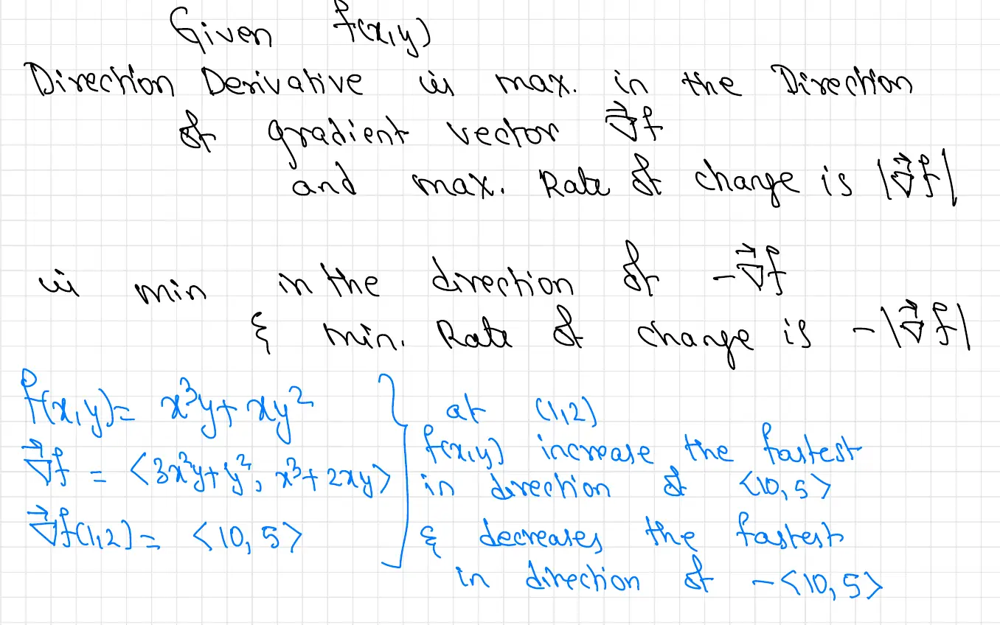
Theorem: Given \(f(x,y)\):
For \(f(x,y) = x^2y + xy^2\) at \((1,2)\):
Solution:
First, compute the gradient:
\[\nabla f = \langle 2xy + y^2, x^2 + 2xy \rangle\]At \((1,2)\):
\[\nabla f(1,2) = \langle 10, 5 \rangle\]Maximum rate of increase: \(f(x,y)\) increases the fastest in the direction of \(\langle 10, 5 \rangle\).
Maximum rate of decrease: \(f(x,y)\) decreases the fastest in the direction of \(-\langle 10, 5 \rangle = \langle -10, -5 \rangle\).
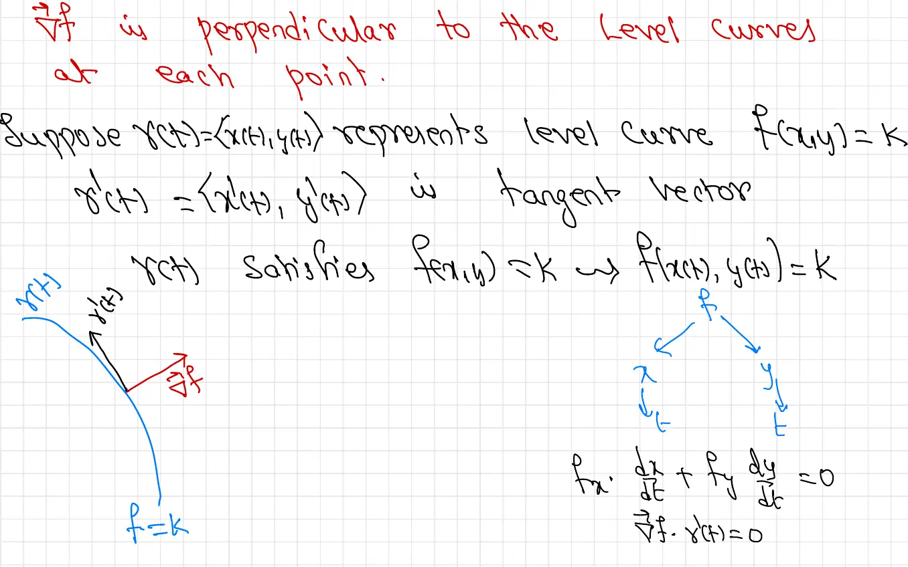
Theorem: The gradient \(\nabla f\) is perpendicular to the level curves at each point.
Proof:
Suppose \(\vec{r}(t) = \langle x(t), y(t) \rangle\) represents a level curve \(f(x,y) = k\).
Then \(\vec{r}'(t) = \langle x'(t), y'(t) \rangle\) is a tangent vector to the curve.
Since \(\vec{r}(t)\) satisfies \(f(x,y) = k\), we have \(f(x(t), y(t)) = k\) for all \(t\).
Differentiating both sides with respect to \(t\):
\[\frac{d}{dt}[f(x(t), y(t))] = \frac{d}{dt}[k]\] \[f_x \frac{dx}{dt} + f_y \frac{dy}{dt} = 0\] \[\nabla f \cdot \vec{r}'(t) = 0\]This shows that \(\nabla f\) is perpendicular to the tangent vector \(\vec{r}'(t)\), meaning the gradient is perpendicular to the level curve.
Diagram Description: The page shows a level curve \(f=k\) in blue. At a point on the curve, the gradient vector \(\nabla f\) is drawn in red, pointing perpendicular to the curve. The tangent vector to the curve is also shown, demonstrating that it is orthogonal to the gradient.
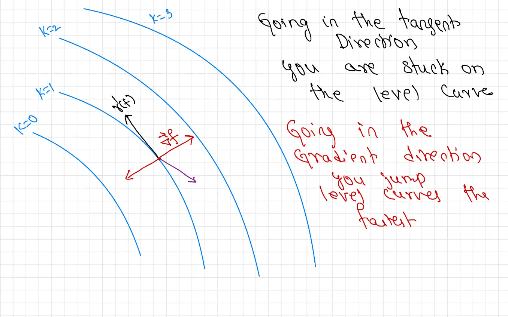
Diagram Description: The page shows several parallel level curves labeled \(k=0\), \(k=1\), \(k=3\). At a point \(x(t)\) on one of the curves, there are three vectors drawn: the tangent vector to the level curve (in black), the gradient vector \(\nabla f\) (in red) pointing perpendicular to the curve, and another vector in purple showing a different direction.
Key Insight: Going in the tangent direction (along the level curve), you are stuck on the same level curve. The directional derivative in this direction is zero.
Key Insight: Going in the gradient direction, you jump between level curves the fastest. This is the direction of steepest ascent.
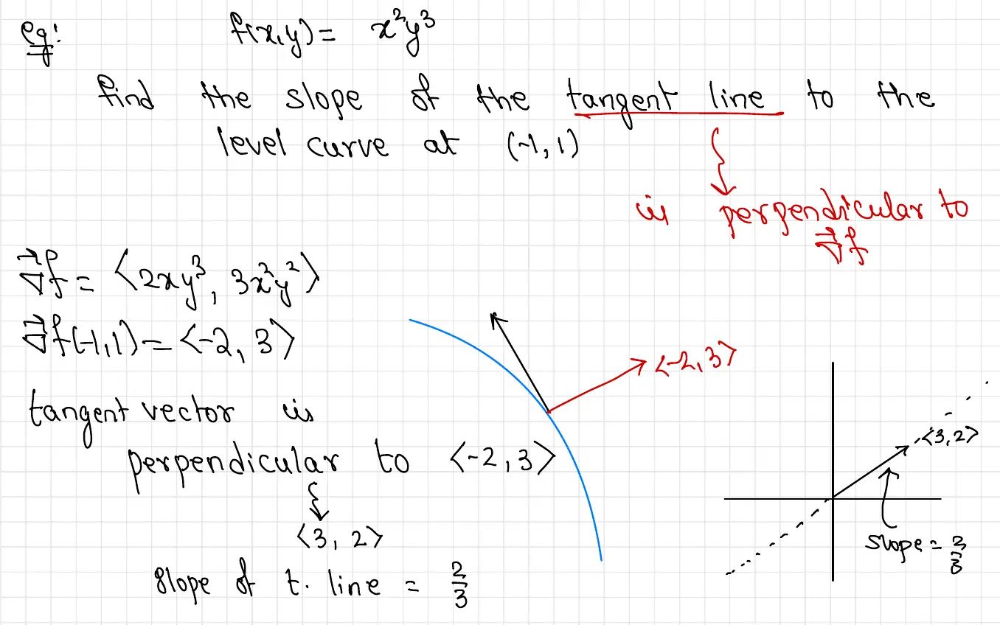
Given \(f(x,y) = x^2y^3\), find the slope of the tangent line to the level curve at \((-1, 1)\).
The tangent line is perpendicular to \(\nabla f\).
Solution:
First, compute the gradient:
\[\nabla f = \langle 2xy^3, 3x^2y^2 \rangle\]At \((-1, 1)\):
\[\nabla f(-1,1) = \langle -2, 3 \rangle\]The tangent vector to the level curve is perpendicular to \(\langle -2, 3 \rangle\).
A vector perpendicular to \(\langle -2, 3 \rangle\) is \(\langle 3, 2 \rangle\).
Therefore, the slope of the tangent line is:
\[\text{slope} = \frac{2}{3}\]Diagram Description: The page includes a coordinate system showing a level curve passing through the point \((-1,1)\). The gradient vector \(\langle -2, 3 \rangle\) is drawn perpendicular to the curve, and the tangent vector \(\langle 3, 2 \rangle\) is drawn along the curve. A dashed line with slope \(\frac{2}{3}\) represents the tangent line to the level curve.